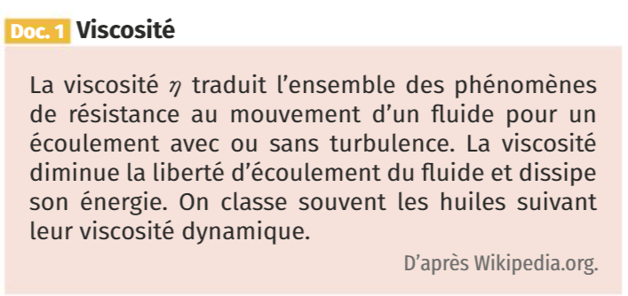
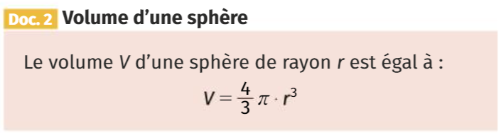
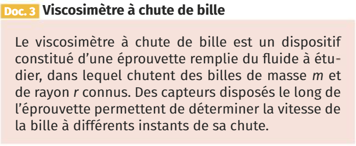
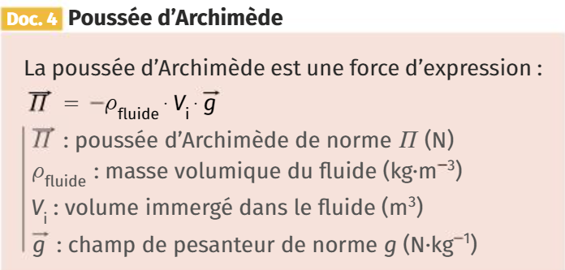
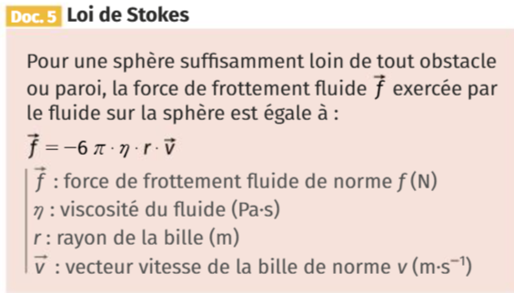
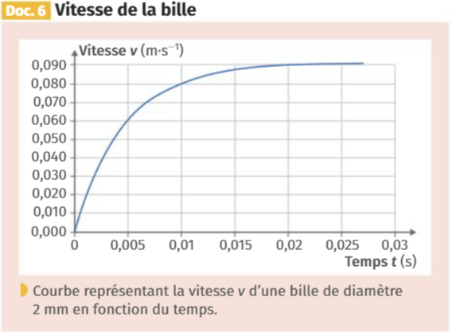
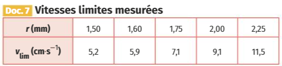
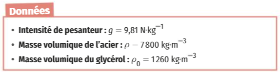

La réduction active de bruit consiste à supprimer le bruit résiduel dans les oreillettes per émission d’un signal appelé « anti-bruit ». Le Document 1 présente le niveau d’intensité sonore mesuré en fonction de la fréquence dans les situations suivantes :
sans casque (cas n°1)
avec casque en réduction passive (cas n°2)
avec casque en réduction passive et active (cas n°3)
Identifier approximativement les domaines de fréquence pour lesquels :
On mesure l’intensité sonore lorsque le bruit et l’anti-bruit sont émis simultanément dans trois situations (Document 2). Le niveau sonore du bruit et de l’anti-bruit lorsqu’ils sont émis seuls est de 50 dB.
Préciser dans quelle situation l’intensité sonore est la somme des intensités des sons pris séparément.
Déterminer la situation qu’il faut retenir pour le dispositif de réduction active de bruit.
Calculer l’atténuation associée.
Document 2 : Variation de l’intensité sonore
| Situation | a | b | c |
|---|---|---|---|
| Verrouillage de phase | Non | En phase | En opposition de phase |
| Niveau sonore (dB) | 53 \(\pm\) 1 | 56 \(\pm\) 1 | 44 \(\pm\) 1 |
Le glycérol est un liquide transparent, incolore et visqueux. Du fait
de sa non-toxicité, il est utilisé notamment dans l’industrie
pharmaceutique, car il améliore l’onctuosité des médicaments sous forme
de sirop.
On souhaite déterminer la viscosité d’un échantillon de glycérol à
l’aide d’un viscosimètre à chute de bille.
Faire un schéma représentant les différentes forces s’exerçant sur la bille lors de sa chute.
Exprimer le poids de la bille \(\vec{P}\) en fonction de \(\rho\), \(V\) et \(\vec{g}\).
A l’aide de la deuxième loi de Newton, du document 4 et du document 5, donner une relation vectorielle liant les vecteurs \(\vec{a}\), \(\vec{v}\) et \(\vec{g}\).
Projeter cette relation sur un axe (\(Oz\)) vertical dirigé vers le bas.
Montrer que la relation précédente peut s’écrire sous la forme : \[\dfrac{dv}{dt} = A + B \cdot v\] On précisera les expressions littérales de \(A\) et \(B\).
On a filmé la chute de différentes billes dans le glycérol afin de déterminer l’évolution de leur vitesse en fonction du temps. D’après le document 6, expliquer pourquoi on peut parler d’une vitesse limite de la bille/
Montrer que la vitesse limite \(v_{lim}\) a pour expression : \[v_{lim} = \dfrac{2(\rho - \rho_0) \cdot g \cdot r^2}{9 \eta}\]
Exploiter le document 7 afin de déterminer la viscosité \(\eta\) du glycérol.
2







